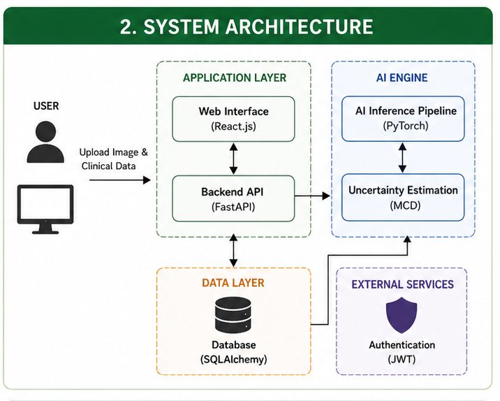
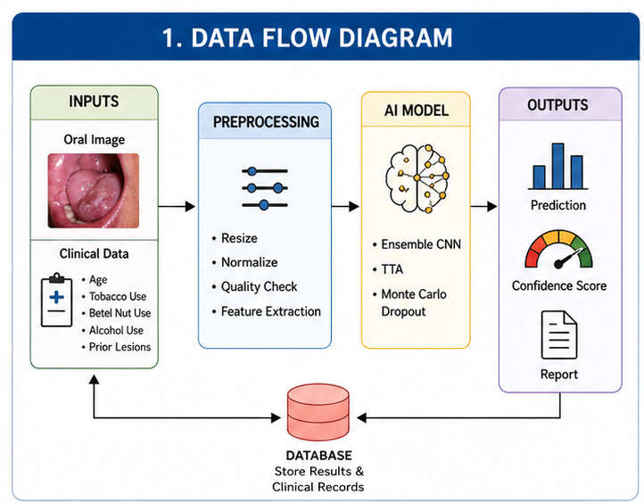
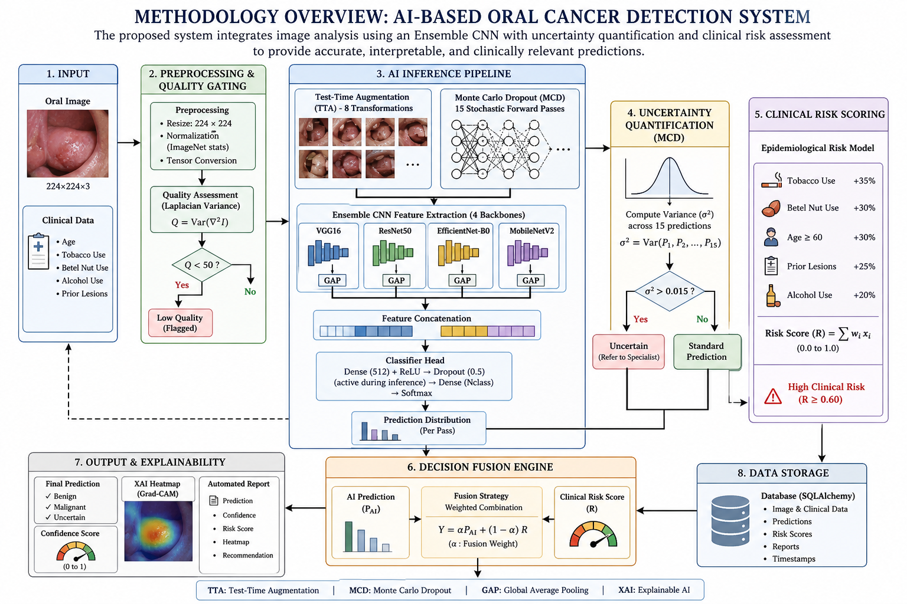
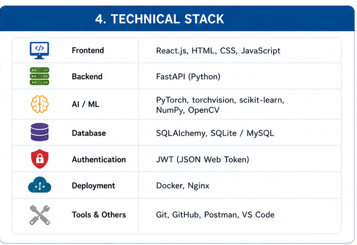

Translating deep learning into clinical practice is restricted by four critical AI faults:
Standard models give definitive answers even when unsure, leading to dangerous misdiagnoses. They lack Uncertainty Quantification.
Image-only AI ignores vital patient history like tobacco use, age, and habits, treating high-risk and low-risk patients identically.
Models trained on perfect lab datasets fail when processing real-world, blurry smartphone images.
Without visual explanations, doctors cannot trust or validate the AI's decision-making process.



